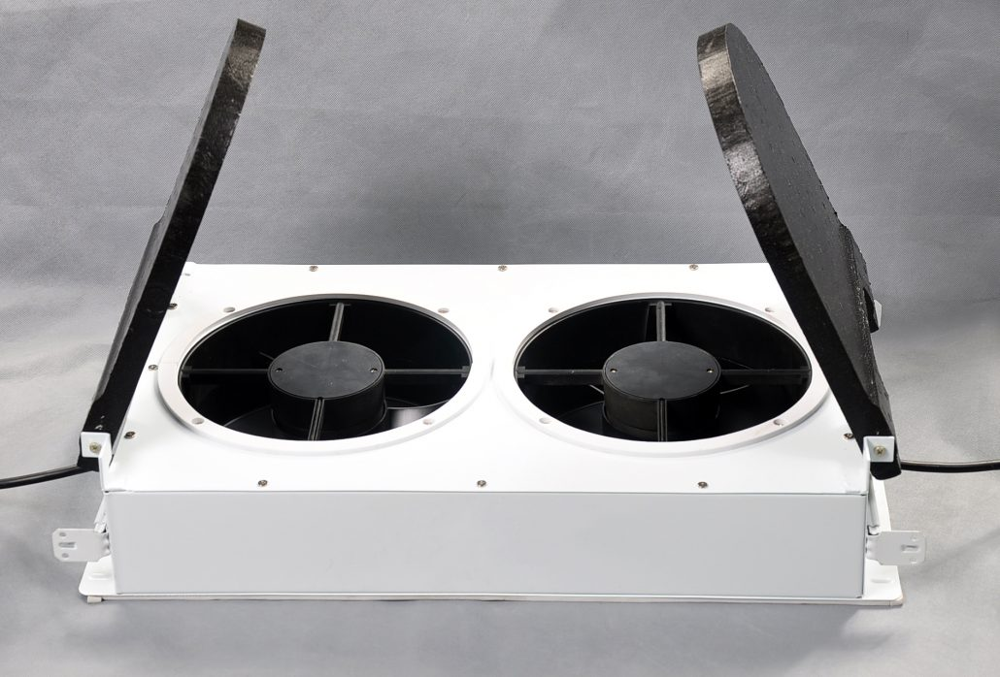

What is a Whole house fan?
Put simply, a whole house fan is a ventilation cooling system for the home that uses less energy than a traditional air conditioner. This energy efficient system works by pulling cooler air from the outside of the home to the inside, creating active cross breezes with open windows.
How do they work?
Since it is normally cooler in the evenings, this would be the best time to turn on the whole house fan. Homeowners simply open a few windows and the whole house fan will cool and ventilate the entire home. When sized properly whole house fans can exchange the entire air in the home every 3-4 minutes, or 15-30 times per hour.
When running the system for several hours, all the hot air will be pulled out of the mass in the home. This process is called thermal mass cooling. Because the hot air is vented through the attic to the outside, the home stays cooler the next day as well. The home will feel fresh and cool with a whole house ventilation fan.
How to use a whole house fan
To cool the home, homeowners run the whole house fan when it’s cooler outdoors than indoors, which is usually in the early morning or evening time in order to continually circulate cooler, fresh air. You never want to run the system when it is warmer outside unless you want to warm and ventilate your home in the colder months of the year.
Since whole house fans are used primarily as an alternative-to-A/C cooling system, homeowners will most use their system in the spring, summer, and fall. Instead of A/C, they will open a few windows, activate the “breeze on a switch,” and bring the fresh cool air inside.
When operating the system, homeowners open only a few select windows, 4-6 inches each. This will greatly improve the cooling breeze that is felt. Homeowners must be sure to open windows far enough away from the fans intake in the room that is being cooled in order to feel the breeze. This way, the air will be drawn across the room cooling it in its entirety.
As the fan continues to run throughout the nighttime and early morning, more and more heat is pulled out of the mass in the home, such as furniture, walls, flooring, etc.
When heat is pulled out of the mass within the home, the home becomes truly cooled down. Then, in the morning, before it begins to heat up outside, the fan is turned off, windows are closed and blinds are drawn in order for the home to resist being heated up as quickly. When the homeowner comes home at the end of the day, the house will be cooler and more comfortable because it resisted the heat better than it would have without the whole house fan. This is why the A/C doesn’t have to work as long or as hard. The homeowner will continue to use their air conditioning on occasion when the outside temperature does not cool off enough during the early morning and nighttime hours, however, they won’t need to use it as long or as often.
History of Whole House Fans
Whole house fans are not new! They have been around since the 1960s, and there have been several generational changes to the technology.
There are three types of whole house fans:
- Traditional Whole House Fans
- Mini Ceiling Mounted Whole House Fans
- Advanced Whole House Fans (also known as “ducted whole house fans”)
Whole house fans do exactly what they claim to do; move a lot of air! Some of the larger systems can move up to 10 times the amount of air that a typical A/C can move.
Whole house fans were first used as an inexpensive way to ventilate a home, cool it down, and save money; instead of turning on the air conditioning unit — which uses a lot of electricity, which costs a lot of money — whole house fans were designed as an alternative to A/C.
Whole house fans originated in the south and east coast of the United States. Because of the modern changes to the technology whole house fans have become really popular in the western states because of the cost of electricity and the hot weather conditions.
What is an advanced whole house fan?

First introduced in the early 2000s, advanced whole house fans, also known as “ducted whole house fans”, is a brand new design that perfected the old “mousetrap”. Advanced whole house fans are quieter, more energy efficient, and easier to install than all other whole house fans. Advanced whole house fans are whisper-quiet when compared to the traditional whole house fan. And because it’s quiet, people will let it run for hours and hours at a time, allowing the system to do its work!
Advanced whole house fans suspend the motor head three to six feet away from the ceiling grille with an acoustically lined duct that dampens the sound level. Sound tends to travel in a straight line, and because of this, an advanced whole house fan is suspended at a 90-degree angle to dampen the noise.
Advanced whole house fans also include a barometric pressurized damper system above the grille that seals at an R5 value. This prevents minimal heat and air transfer back into the home. Traditional whole house fans do not have any R-value so there will be a lot of heat transfer between the home and attic.
Advanced whole house fans also have a much smaller ceiling grille. Some advanced whole house fans have very large grilles, but the market leader in advanced whole house fans has grilles ranging from 14 inches by 14 inches to 14 inches by 36 inches and use attractive white egg-crate style aluminum. They are typically removable for easy cleaning and are very quiet. Advanced whole house fans use ECM (Electronically Commutated Motors) or PSC (Permanent Split Capacitor) motors that are the most energy efficient and durable motors on the market today. They can be up to 2-5 times more efficient than a traditional whole house fan.
What is a traditional whole house fan?
Traditional whole house fans are the original whole house fans that originated in the southern United States as a cheap alternative to A/C. Traditional whole house fans have many negatives compared to newer technology whole house fans. They are very loud sounding like a helicopter in the home, are very inefficient using cheap motors, and are very cheaply made. The last objection to a traditional whole house fan is the look of the fan on the ceiling level. Traditional whole house fans are very large, ranging from 24 inches by 24 inches to 48 inches by 48 inches. Most include shutters that rattle very loudly and are very aesthetically unpleasant.
What is a mini ceiling mounted whole house fan?
In the early 1990s, the mini ceiling mounted whole house fan was created. They are very similar to a traditional whole house fan but are much smaller.
They are designed to fit in much tighter spaces without having to cut any ceiling joists to fit them in, unlike the traditional whole house fans. They are a much easier fan to install compared to the traditional whole house fans.
Typical mini ceiling mounted whole house fans move around 1000 CFM, which is much lower output than a traditional or advanced whole house fan. This results in a very slow cooling effect on the home. Often times you have to put in three to five units in the homes to cool the entire living space.
They are quieter than a traditional whole house fan, but they are still quite noisy when compared to an advanced whole house fan.
What are the benefits of a whole house fan?
Whole house fans have many benefits besides just cooling the home and help reducing electricity costs.
Whole house fans work great to improve the indoor air quality of a home by exhausting and ventilating the hot, stuffy and polluted air in the home.
Many homeowners think that the air outside is dusty and dirty and oppose to opening their windows. However, according to the American Lung Association, the air inside the home is up to 2-5 times more polluted than the outdoor air. This is due to the chemicals that are used in the home, pet dander, germs, allergens, etc.
This means that when a homeowner is running their whole house fan, they are getting rid of the polluted air inside their home and replacing it with cool, fresh outdoor air. We have even had customers state that their allergies went away when they installed the whole house fan!
Many homeowners also think their house will get dustier by running the whole house fan. However, due to the amount of air a whole house fan moves when properly sized to the home, dust does not have any time to settle in the home! Most customers, even in the dustiest of areas, do not notice a big increase in the amount of dust in the home.
For homeowners that are still concerned with bringing in dust or allergens, there is a new product, called PollenTec that is designed to block 99.9% of dust and allergens. The screens are very easy to install, simply replacing the standard screens already installed in the home. Also, since whole house fans only require a few windows to be open, homeowners do not need to replace every screen in the home! The screens will also help tint the windows much better keep your home cooler.
Many customers love a whole house fan because they can get rid of cooking odors, like fish, in a matter of minutes!
Some homeowners are even able to smoke in their home because they have a whole house fan to exhaust the smoke and odor!
What size whole house fan do I need?
Size is very important to a whole house fan system. If a whole house fan system is not sized properly, meaning enough airflow, the system will not work effectively. Airflow is measured in CFM, or Cubic Feet Per Minute. Here is the formula for proper sizing:
- For a “good” system, 2 CFM per square foot of living space.
- For a “better” system, 2.5 CFM per square foot of living space.
- For the “best” system, 3 or more CFM per square foot of living space.
This math formula will work every time, for any size home, and as always the more airflow the better.
However, there are two other considerations that need to be taken into account when sizing a system.
The first consideration is location. If the home is located in a coastal region where the climate is much cooler than a desert, for example, a “good” system will work great.
But in a desert climate, the best system would deliver the best results.
The second consideration is ceiling height. If the ceilings in the home are taller than 8 feet, be sure to size the system a little bit larger to account for the increased air volume inside of the home.
Remember, the sizing formulas are backed by the Department of Energy, PG&E, and the California Energy Commission.
If sized properly, the whole house fan system will result in a totally satisfied customer every time!
How much attic venting is required for a whole house fan?
Once the correct system size is determined, based on the sizing principles above, the amount of attic venting required can be calculated. Adequate attic venting based on total CFM is important so the system can operate at its full potential.
Attic venting is measured in square feet and is expressed in the net free vent area.
As stated by the Department of Energy, PG&E, and the California Energy Commission, each home should have 1 square foot of net free vent area for every 750 CFM in the QuietCool system.
It is very easy to measure the venting in the attic. Simply measure the width and length, in inches, multiply them together, divide by 144, and that is your gross free vent area in square feet. Then, simply deduct 25% from that number to get the net free vent area which accounts for any air restrictions through the vent.
Do this for every vent, add them all up, and that will give the exact amount of how much venting there is or will need to add to equal the venting requirement stated in the local building codes.
Can a whole house fan keep my home healthier?
In 2013, California updated the Title 24 building codes to make whole house fans a prescriptive requirement in all new homes in climate zones 8-14, which makes up about 80% of the state. They have studied and identified whole house fans as one of the top ways to cool the entire home in the most cost-effective way.
In fact, UCLA did a study in 2013 stating that whole house fans can replace air conditioning completely in 10 of the 16 California climate zones. Further, the Department of Energy claims that whole house fans are the most cost-effective way to cool your home.
When installing a whole house fan, builders must meet these three requirements: a system that supplies at least 1.5 CFM for every square foot of conditioned living space; a system that is listed on the CEC Appliance Efficiency Database; and an attic that has 1 square feet of net free vent area for every 750 CFM in the system.
Contact Us
We'll be glad to discuss your options. We can easily schedule a free in-home evaluation and help you choose the best system for your home.